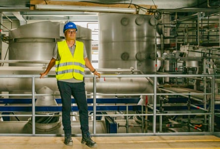

The EU may as well “apply to be a province of China” such is its inability to wean itself off that country’s supply of critical raw materials used in everything from electric vehicles to smartphones and wind turbines, a leading German industrialist has said.
As chief executive of AMG Lithium, the EU’s first factory to make the lithium hydroxide used in many car batteries, Stefan Scherer sits at the centre of what has been dubbed a new gold rush.
But the chemist said China will continue to dominate battery technology and undercut EU rivals unless temporary protections on components are put in place, arguing that current Brussels policy and laws are failing to deliver results on the ground.
“Europe has to become independent of China, otherwise it’s just blah blah blah,” said Scherer, speaking at the AMG plant in Bitterfeld-Wolfen, a town in the former east Germany .
The European Commission president, Ursula von der Leyen, promised as recently as March that the EU would “will promote domestic production to avoid strategic dependencies, especially for batteries”.
Stefan Scherer, inside AMG Lithium’s factory, in 2023.Photograph: Kristin Bethge/The Guardian
But the reality on the ground, Scherer said, is that many component manufacturers, known as other equipment manufacturers (OEMs), are faced with daily cheaper Chinese alternatives ranging from steel to whole batteries.
Unless the EU addresses this in a meaningful way, this will not change and will imperil the bloc’s climate goals, he said, adding: “It might be better to apply to be a province of China. It’s an interesting thought if you think it through. We are really at a tipping point and it has nothing to do with the war in Ukraine, it’s a complete change of global relationships.”
Scherer said the world economy had been “lifted on the backs of people working hard for Europe in China, in India” and the new balance in the global supply chain was the western leaders’ own creation.
Scherer said he was not pleading for special treatment and was confident AMG would succeed in the auto market’s green transition, but was not optimistic that Europe’s dependency on China would change.
AMG Lithium in Bitterfeld-Wolfen in former east Germany opened last year and aims to produce 20,000 tonnes of lithium hydroxide a year, enough to supply 500,000 EVs. It produced its first test batch last month and hopes to produce commercial quantities later this year.
Scherer said he has “no doubts that we will be able to sell this [product] within Europe”, but added: “I’m talking more about the long term; about strategic investment in European resources, European refineries, this has to happen now, because it takes you five years if you are lucky to get this far.”
Bitterfeld-Wolfen where AMG Lithium’s factory is situated.Photograph: Kristin Bethge/The Guardian
It has taken the company five years and £150m to get to its current position, with no sign of a rival for two or three years. “It is a slow process,” he said.
He was highly critical of the EU’s Critical Raw Materials Act 2024 (CRMA), seen as the backbone of the EU’s strategy to reduce its reliance on China, arguing it fails to match US moves to push manufacturers to buy locally.
“Unfortunately, the CRMA doesn’t hold you responsible for anything, for example, in the mining of raw materials there is no incentivisation or penalisation to do mining in Europe,” he said.
“It is completely opposite to the US where they have a local content policy that sticks. There, they have to have a certain percentage of materials they see as critical to be produced on US soil.
“We don’t have that. We have intentions, but nothing tangible. You don’t have to pay if you don’t buy from the EU, so why would you? Instead, you just continue purchasing from China.”
China, by contrast, has a near 20-year start on Europe, having set the strategy to acquire stakes in mines and supply contracts all over the world as part of Xi Jinping’s 2013 belt and road initiative.
It now refines 60% of the world’s supply of lithium on its own soil and controls 60% of the world’s production of battery components, giving it a dominant position across the markets.
The consensus in his industry is that those in the critical raw material sector need protection while they go through the lengthy process of trying to grow to match Chinese state-backed rivals, Scherer said.
“I don’t mean you have to support every investment with public grants,” he said. He suggested Brussels could offer temporary tariffs or tax incentives similar to the US’s Inflation Reduction Act, which incentivises those who buy home-produced lithium, cobalt, nickel and graphite – all critical to creating green technologies.
Brussels and Washington are still thrashing out trade negotiations before the 9 July deadline when a threatened 50% tariff could be imposed on all EU imports to the US. European negotiators are seeking to trim a possible 10% baseline levy and win concessions in key areas, including trying to reduce a 25% border tax imposed on cars and a 50% rate on steel and aluminium.
As far as Scherer is concerned, Germany’s struggling auto industry may yet have further to fall before it improves. “You cannot wait for Brussels to make decisions,” he said.
One of his biggest gripes is the price of energy in Germany, which Eurostat puts at 37% higher than the EU average. It is also the bugbear of the German steel industry with ThyssenKrupp warning last night that the sector could be wiped out by a combination of Trump tariffs, high energy costs and cheaper Chinese imports.
Combining temporary tariffs and tax incentives with an invitation to the Chinese to invest in Europe on condition they employ Europeans could be the answer, Scherer said.
“We have to create an environment which enables western companies to safeguard their investments, not for everything, but critical technology especially in the auto industry where you are replacing the internal combustion engine technology with a new one. This is highly strategic and important move.”